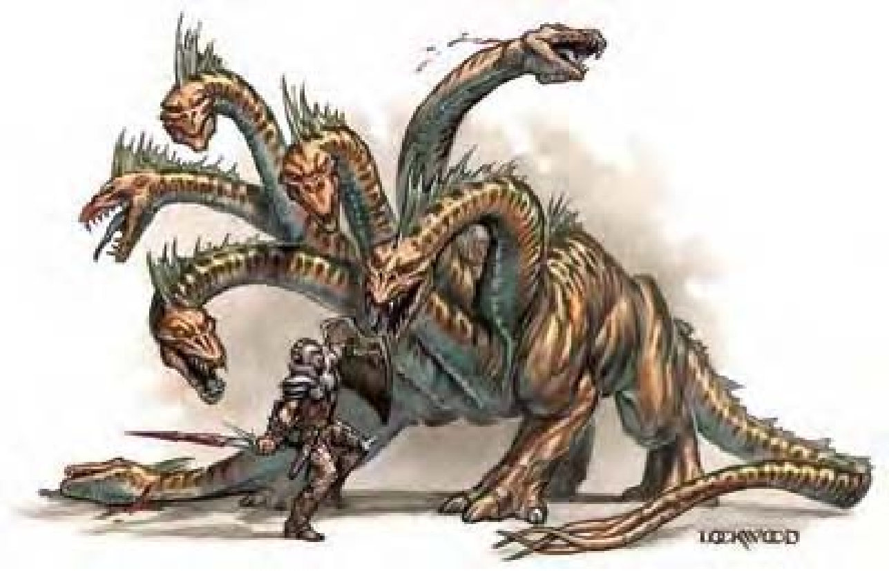

这只野兽看来像是某种巨大的爬虫类，丛生多条细长的颈项与头部。
多头蛇蜥是一种多头类爬虫怪物。即使敌人全副武装，多头蛇蜥也能迅速将他撕成碎片。
多头蛇蜥的体色分布从灰棕至深棕色，腹部则为浅黄或棕色，眼睛呈琥珀色而牙齿为黄白色。身长约20英尺，体重约4000磅。
多头蛇蜥不会说话。
即使多头蛇蜥已做了移动或冲刺动作，该轮依旧可以使用所有的头进行攻击而不受减值。
砍掉所有的头或是毁掉他的身体才能杀死多头蛇蜥。试图砍头者必须以挥砍武器成功地达成「击破武器」动作。(玩家必须在攻击检定前宣告其攻击目标。)除非攻击者拥有「精通击破武器」专长，否则试图击破武器将引发借机攻击。因为战斗中多头蛇蜥的头会四处扭动挥击，所以攻击者只要站在可以打到多头蛇蜥本体的位置，就可以试图砍头。攻击者也可选择以准备动作等待多头蛇蜥咬向他，再进行「击破武器」。
多头蛇蜥每颗头的生命值相当于其总生命除以头数。举例而言，若某只五头蛇蜥的生命值为52点，则每颗头的生命值为 (52/5=10.4，舍去小数=10)，每失去一颗头，会对本体造成相当于头生命值一半的伤害。其本能反射性地阻断断颈处的血流，以防失血过多。多头蛇蜥无法再以被砍断的头进行攻击，但不会因此受到其他不利减值。
每有一颗头被砍断，多头蛇蜥会在1d4轮内从残干部长出两颗头，但无法再生长超过其原本头数的两倍，且超过原本数量的头也会在一天内萎缩死亡。若要防止砍断处的再生，每处残干必须在头重生前，以火焰或强酸造成5点以上的伤害 (须接触攻击成功)。炽焰武器 (或类似效果) 会在砍断头的同时对残干造成能量伤害。区域型的火焰或强酸 (如「火球术」或龙息) 除了对多头蛇蜥本体造成伤害外，也可损毁多个残干。除非所有的头都被砍断，且残干被火焰或强酸烧毁，否则多头蛇蜥不会因失去头而死亡。
多头蛇蜥的身体也与其他生物一样会受伤，但其快速医疗能力 (见下文) 使对手很难用这种方式杀掉他。任何不针对 (或无法针对) 头部做「击破武器」的攻击一律视为攻击身体，比如区域型法术只会伤害多头蛇蜥的身体，而非头部。瞄准型法术也无法只对头部做「击破武器」动作 (因此视为攻击身体)，唯有造成挥砍伤害的攻击才能做出「击破武器」动作。
快速医疗 (特异)：多头蛇蜥每轮可恢复生命值，恢复值为 (10 +原本头数) 点。
技能：由于有很多颗头，多头蛇蜥在进行「聆听」与「侦察」检定时具有+2种族加值。多头蛇蜥在进行任何特殊动作或闪身避祸时，「游泳」检定具有+8种族加值。即使分心或受困，他们在进行「游泳」检定时都可以随时取10。若以直线前进，则可在游泳时进行奔跑动作。
专长：多头蛇蜥的「战斗反射」专长使每颗头都可以进行借机攻击。
| 头数 | 生命骰 | HP | AC | 攻击 | 全力攻击 | 快速医疗 | 强韧/反射/意志 | 力量/敏捷 | 技能 | 专长 | CR |
|---|---|---|---|---|---|---|---|---|---|---|---|
| 5头 | 5d10+28 | 55 | 15 | 5啮咬+6 | 5啮咬+6 | 15 | +9/+5/+3 | 17/12 | 聆听+6 侦察+6 游泳+11 | 战斗反射、钢铁意志、健壮、专攻武器(啮咬) | 4 |
| 6头 | 6d10+33 | 66 | 16 | 6啮咬+8 | 6啮咬+8 | 16 | +10/+6/+4 | 17/12 | 聆听+6 侦察+7 游泳+11 | 战斗反射、钢铁意志、健壮、专攻武器(啮咬) | 5 |
| 7头 | 7d10+38 | 77 | 17 | 7啮咬+10 | 7啮咬+10 | 17 | +10/+6/+4 | 19/12 | 聆听+7 侦察+7 游泳+12 | 战斗反射、钢铁意志、健壮、专攻武器(啮咬) | 6 |
| 8头 | 8d10+43 | 87 | 18 | 8啮咬+11 | 8啮咬+11 | 18 | +11/+7/+4 | 19/12 | 聆听+7 侦察+8 游泳+12 | 战斗反射、钢铁意志、健壮、专攻武器(啮咬) | 7 |
| 9头 | 9d10+48 | 97 | 19 | 9啮咬+13 | 9啮咬+13 | 19 | +11/+7/+5 | 21/12 | 聆听+8 侦察+8 游泳+13 | 盲战、战斗反射、钢铁意志、健壮、专攻武器(啮咬) | 8 |
| 10头 | 10d10+53 | 108 | 20 | 10啮咬+14 | 10啮咬+14 | 20 | +12/+8/+5 | 21/12 | 聆听+8 侦察+9 游泳+13 | 盲战、战斗反射、钢铁意志、健壮、专攻武器(啮咬) | 9 |
| 11头 | 11d10+58 | 118 | 21 | 11啮咬+16 | 11啮咬+16 | 21 | +12/+8/+5 | 23/12 | 聆听+9 侦察+9 游泳+14 | 盲战、战斗反射、钢铁意志、健壮、专攻武器(啮咬) | 10 |
| 12头 | 12d10+63 | 129 | 22 | 12啮咬+17 | 12啮咬+17 | 22 | +13/+9/+6 | 23/12 | 聆听+9 侦察+10 游泳+14 | 盲战、战斗反射、精通天生武器(啮咬)、钢铁意志、健壮、专攻武器(啮咬) | 11 |
共同属性：体质20、智力2、感知10、魅力9。速度20英尺(4格)、游泳20英尺。占据15英尺/触及10英尺。黑暗视觉60英尺、昏暗视觉、灵敏嗅觉。
环境：温带沼泽 (炎蛇蜥：热暖带沼泽；寒蛇蜥：寒冷带沼泽)
组织：单独
宝藏：十分之一钱币、50%宝物、50%物品
阵营：通常绝对中立
多头蛇蜥是特意设计成难以用一般方式击败的怪物。没有「精通击破武器」专长的人物将会发现要砍断这种怪物的头既困难又危险，且多头蛇蜥的快速医疗能力能迅速恢复人物对其本体造成的伤害。唯有拥有「精通击破武器」专长的人物或能有效协同作战的队伍才可以打败多头蛇蜥。